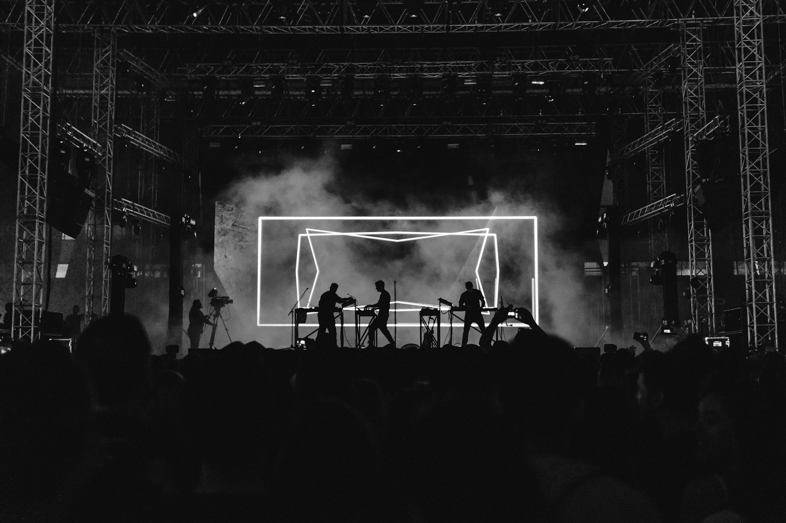

2019
First songs in Dago
Raka and Sinta start writing after open-mic nights. The set is short, the room is smaller, and the name Arunika sticks.
About
Arunika writes alternative rock for late rooms and long rides home. The name is the light just before morning. The songs usually arrive a little later than that.

Band introduction
The four of them met around campus shows and stayed because the songs got better every month. Vocals and guitar sit up front, a second guitar pulls the harmony sideways, and bass and drums keep the floor moving.
Nothing here is a studio myth. The records are independent, the shows are in real rooms, and the next date is already on the calendar.
Band history
2019
Raka and Sinta start writing after open-mic nights. The set is short, the room is smaller, and the name Arunika sticks.
2022
Dimas and Maya join. A monthly residency in a Bandung room becomes the place where the songs learn to be loud.
2024
The first single, recorded between night shifts. It is a song about a city that will not sleep, released on their own.
2025
A five-song EP made after a month of small-room shows. The band takes the set outside Bandung for the first time.
2026
The first finished song of the next record, and a festival date in Jakarta on 12 October.
Genre and base
Highlights
The four members are on the next page. Booking, press, and general notes start at contact.